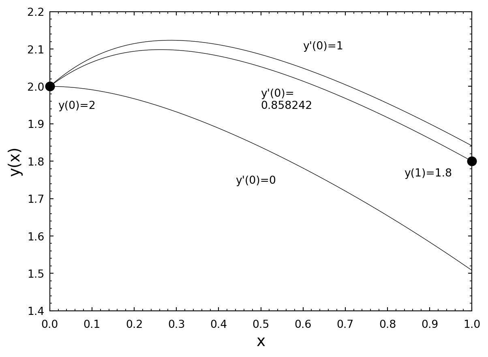

8 Numerical Integration of Ordinary Differential Equations
8.1 Introduction
Most ordinary differential equations of mathematical physics are second-order equations. Examples include the equation of motion of the simple pendulum
\[ \frac{d^2\theta}{dt^2} + \frac{g}{L} \sin\theta = 0, \]
Van der Pol’s equation, which arises from the behavior of a three-element vacuum tube
\[ \frac{d^2y}{dt^2} - \epsilon(1 - y^2)\frac{dy}{dt} + ay = 0, \]
Emden’s equation, which can be used to calculate the thermal behavior of a spherical cloud of gas acting under self gravity and the laws of thermodynamics (i.e. a stellar interior)
\[ \frac{d^2y}{dx^2} + \frac{2}{x}\frac{dy}{dx} + y^n = 0, \]
and a closely related equation, which describes the interior of a white dwarf star
\[ \frac{1}{x^2}\frac{d}{dx}\left(x^2\frac{dy}{dx}\right) + (y^2 - C)^{3/2} = 0 \]
Any second-order differential equation can be expressed as a system of two first-order equations. For instance, if we take Van der Pol’s equation, we can replace it by the system
\[ \frac{dy}{dt} = z, \quad \frac{dz}{dt} = \epsilon(1 - y^2)z - ay. \]
NoteExercise 8.1
Express the differential equations for the simple pendulum, Emden’s equation and the white dwarf equation as systems of two first-order differential equations.
While some of the differential equations of mathematical physics can be solved analytically, others can be solved only by using numerical methods. Numerical methods for integrating differential equations are designed to operate on first-order differential equations, for reasons that will become clear later.
A problem involving an ordinary differential equation is not completely specified by the equation alone. The boundary conditions must also be specified. For second-order ordinary differential equations there are essentially two different types of boundary conditions:
- Initial value problems, in which values for \(y\) and its derivative \(dy/dx\) are given at an initial point, \(x = x_0\) and
- Two-point boundary value problems in which values for \(y\) are given at an initial \(x_0\) and a final \(x_f\) point.
These two types of problems require different approaches. We concentrate first on initial-value problems.
8.2 Initial Value Problems
8.2.1 Difference Equations and Euler’s Method
The principle underlying the numerical integration of ordinary differential equations is that an approximate solution may be obtained by replacing the infinitessimal differentials \(dy\) and \(dx\) by finite differences \(\Delta y\) and \(\Delta x\). Thus, the differential equation
\[ \frac{dy}{dx} = f(x, y) \]
may be expressed as a difference equation as follows:
\[ \Delta y = f(x, y)\Delta x. \]
Using this equation (or a more sophisticated version of it), we may “step” through a solution using step sizes of \(\Delta x\), beginning with the initial value \(y = y_0\) at \(x = x_0\) for the first step
\[ \begin{aligned} y_1 &= y_0 + f(x_0, y_0)\Delta x \\ x_1 &= x_0 + \Delta x \end{aligned} \]
or, in general, for the \(i + 1\)th step
\[ y_{i+1} = y_i + f(x_i, y_i)\Delta x \tag{8.1}\]
\[ x_{i+1} = x_i + \Delta x \tag{8.2}\]
It should be realized that Equation 8.1 and Equation 8.2, known as the simple Euler Method, can be improved upon, as \(f(x_i, y_i)\) is the derivative at the beginning of the interval from \(x_i\) to \(x_{i+1}\) whereas we should use an average value of \(f(x, y)\) over this interval. Indeed, most of the advances in the development of numerical integration techniques can be summarized in terms of the discovery of better and more efficient expressions for the determination of the average value of the derivative, \(f(x, y)\), in the interval \((x_i, x_{i+1})\).
The simple Euler method may be immediately improved by replacing \(f(x_i, y_i)\) in Equation 8.1 with \(\frac{1}{2}[f(x_i, y_i) + f(x_{i+1}, y_{i+1})]\) to yield
\[ y_{i+1} = y_i + \frac{1}{2}[f(x_i, y_i) + f(x_{i+1}, y_{i+1})]\Delta x, \tag{8.3}\]
but this is an implicit method rather than an explicit method, as \(y_{i+1}\) must be known before \(f(x_{i+1}, y_{i+1})\) can be determined. This implicit equation may be made explicit by using the simple Euler method to first predict a value for \(y_{i+1}\), call it \(y^1_{i+1}\), and then Equation 8.3 to correct the value for \(y_{i+1}\), thus:
\[ \begin{aligned} y^1_{i+1} &= y_i + f(x_i, y_i)\Delta x \\ y_{i+1} &= y_i + \frac{1}{2}[f(x_i, y_i) + f(x_{i+1}, y^1_{i+1})]\Delta x \end{aligned} \]
This method, a simple example of a predictor-corrector technique (see below), is called the Improved Euler Method.
Example: Use the improved Euler Method to integrate the differential equation
\[ \frac{dy}{dx} = y \sin x \]
from \(x = 0\) to \(x = 1\) using a step size of 0.1 and the initial conditions \(y = e = 2.718281828...\) when \(x = 0\). The following code will do the job:
#include <stdio.h>
#include <math.h>
int main()
{
double x1,y1,yp1,x2,y2;
double dx = 0.1;
/* initial conditions */
x1 = 0.0;
y1 = exp(1.0);
printf("x = %f y = %f\n",x1,y1);
/* Integrate using Improved Euler from x=0 to x=1 */
while(x1 < 1.0) {
yp1 = y1 + y1*sin(x1)*dx;
y2 = y1 + 0.5*(y1*sin(x1) + yp1*sin(x1+dx))*dx;
x2 = x1 + dx;
if(x2 > 1.0) break;
printf("x = %f y = %f\n",x2,y2);
x1 = x2;
y1 = y2;
}
return(0);
}The result is that when \(x = 1\), \(y = 4.301422\), a fairly good approximation of the “exact” result, \(y = 4.304658\).
NoteExercise 8.2
Integrate the differential equation
\[ \frac{dy}{dx} = (x - 1)y^2 \]
from \(x = 0\) to \(x = 1\) using the initial condition \(y = 1\) when \(x = 0\). Use a step size of 0.1. Attempt to integrate the equation analytically (hint: use separation of variables) and compare your answer with the exact result. Try a step size of 0.01 to see if you get a better result.
The simple Euler method has an error per step that is proportional to \(\Delta x^2\), e.g. \(O(\Delta x^2)\). The improved Euler method improves this to \(O(\Delta x^3)\). Let us now examine a method which has a much better error, \(O(\Delta x^5)\). This method is the fourth-order Runge Kutta method.
8.2.2 The Runge Kutta Method
In our discussion in the previous section, we stated that the history of the development of techniques for the numerical integration of differential equations can be viewed as a quest for better and more efficient methods for the determination of the average value of the derivative \(f(x, y)\) in the interval \((x_i, x_{i+1})\). Let us develop this idea further. Consider the set of equations:
\[ \begin{aligned} k_1 &= f(x_n, y_n)\Delta x \\ k_2 &= f(x_n + \frac{1}{2}\Delta x, y_n + \frac{1}{2}k_1)\Delta x \\ y_{n+1} &= y_n + k_2 \end{aligned} \]
The first equation assigns the derivative of \(y\) at the beginning of the interval to \(k_1/\Delta x\). The second equation then uses \(k_1\) to predict the value of \(y\) at the middle of the interval to be \(y_n + \frac{1}{2}k_1\), and uses this value to evaluate the derivative at that point and assigns it to \(k_2/\Delta x\). The third equation uses this “improved” value of the derivative to determine \(y_{n+1}\). This method of numerical integration is called the midpoint method, and it is also referred to as the second-order Runge-Kutta method. The error in this method is \(O(\Delta x^3)\).
A substantial improvement in this scheme can be obtained by using \(k_2\) to predict a better value of \(y\) at the center of the interval and then using this to determine a better value of the derivative at the center of the interval, \(k_3/\Delta x\). The value of \(k_3\) can then be used to determine a value for the derivative at the end of the interval, \(k_4/\Delta x\), and then all four derivatives (one at the beginning of the interval, two estimates at the center of the interval and one at the end) can be used in a weighted average to give an estimate for an overall average value of the derivative for the entire interval. This can be accomplished with the following series of steps:
\[ \begin{aligned} k_1 &= f(x_n, y_n)\Delta x \\ k_2 &= f(x_n + \frac{1}{2}\Delta x, y_n + \frac{1}{2}k_1)\Delta x \\ k_3 &= f(x_n + \frac{1}{2}\Delta x, y_n + \frac{1}{2}k_2)\Delta x \\ k_4 &= f(x_n + \Delta x, y_n + k_3)\Delta x \\ y_{n+1} &= y_n + \frac{1}{6}(k_1 + 2k_2 + 2k_3 + k_4) \end{aligned} \]
This method, because its error is \(O(\Delta x^5)\), is known as the fourth-order Runge Kutta method. The “magic” of Runge Kutta derives from the fact that the particular weighting used for the derivatives (1,2,2,1) exactly cancels errors of \(O(\Delta x^4)\), thus making the error for the entire method \(O(\Delta x^5)\).
Example: Let us integrate the differential equation of the example of the previous section, but this time using the fourth-order Runge Kutta method. The following code performs the trick:
#include <stdio.h>
#include <math.h>
int main()
{
double x1,y1,x2,y2;
double k1,k2,k3,k4;
double dx = 0.1;
/* initial conditions */
x1 = 0.0;
y1 = exp(1.0);
/* Integrate using fourth-order Runge Kutta from x=0 to x=1 */
while(x1 < 1.0) {
printf("x = %3.1f y = %f\n",x1,y1);
if(x1 == 1.0) break;
k1 = y1*sin(x1)*dx;
k2 = (y1+0.5*k1)*sin(x1+0.5*dx)*dx;
k3 = (y1+0.5*k2)*sin(x1+0.5*dx)*dx;
k4 = (y1+k3)*sin(x1+dx)*dx;
y2 = y1 + (k1 + 2.0*k2 + 2.0*k3 + k4)/6.0;
x2 = x1 + dx;
x1 = x2;
y1 = y2;
}
return(0);
}This code gives the result \(y(1) = 4.304658\), considerably better than before, but without very much more effort!
NoteExercise 8.3
Integrate the differential equation of Exercise 8.2 using the Runge Kutta method. Do you get a better result?
It turns out that it is possible to come up with higher order Runge Kutta schemes. However, in practice, almost everyone uses the fourth-order Runge Kutta method. The reason for this is that, coupled with an adaptive stepsize routine, the fourth-order Runge Kutta method will give almost any accuracy desired.
8.2.3 A Brief Aside: Adaptive Stepsize Control for the Runge Kutta Method
One of the great advantages of the Runge Kutta technique (as opposed to predictor-corrector techniques) is that it is possible to vary the step size from one step to the next. This is an advantage because one can then modify the stepsize in response to the error. In regions where the function is changing rapidly, we need to use small step sizes to keep good accuracy. In other regions where the function is hardly changing, we can take big strides. Such an “adaptive stepsize” routine can greatly increase the efficiency of the Runge Kutta technique. This technique is usually implemented by step doubling. In step doubling we take each integration step twice, once as a full step of length \(2\Delta x\), then as two steps, each of length \(\Delta x\). Let us denote the exact solution for an advance from \(x\) to \(x + 2\Delta x\) by \(y(x + 2\Delta x)\). With step doubling, we get two numerical approximations to \(y(x + 2\Delta x)\), \(y_{(1)}\) and \(y_{(2)}\):
\[ \begin{aligned} y(x + 2\Delta x) &\approx y_{(1)} + (2\Delta x)^5\phi \\ y(x + 2\Delta x) &\approx y_{(2)} + 2(\Delta x)^5\phi \end{aligned} \]
where the last term in both equations involving \(\phi\) (which is assumed to be the same in both equations) gives the error for that step. For the top equation, we are taking a step size of \(2\Delta x\), in the bottom, two steps of \(\Delta x\). The difference \(\epsilon = |y_{(2)} - y_{(1)}|\) we can take as a good estimate of the error for a step of size \(\Delta x\). Clearly, \(\epsilon \propto (\Delta x)^5\). Hence, if the desired error per step is \(\epsilon_0\), we may, after taking our trial steps (as in the above two equations), adjust the step size \(\Delta x\) either upwards or downwards according to
\[ \Delta x_{\text{new}} = \Delta x_{\text{old}} \left|\frac{\epsilon_0}{\epsilon}\right|^{1/5} \]
and then use this new step size to redo the integration step starting at \(x\).
NoteExercise 8.4
Integrate the differential equation of Exercises 8.2 & 8.3 using adaptive stepsize control with the Runge Kutta method. Begin with \(\Delta x = 0.1\) and \(\epsilon_0 = 1.0 \times 10^{-6}\). Print out the intermediate results so that you can see what your algorithm is doing. Remember that the integration must stop at \(x = 1.0\). Experiment with different values of \(\epsilon_0\) to see how close you can get to the “exact” solution.
8.2.4 The Integration of Systems of Differential Equations
Most differential equations of mathematical physics are second-order differential equations. As we saw in the introduction, a second-order ordinary differential equation can always be written as a system of two first-order differential equations. How can we integrate numerically a system of two equations? We need to set up two parallel, interleaved Runge Kutta routines. The best way to illustrate this is to look at an example.
Example: Suppose we have the second-order differential equation (a form of Van der Pol’s equation)
\[ \frac{d^2y}{dx^2} = (1 - y^2)\frac{dy}{dx} - y \]
which we wish to integrate subject to the initial conditions \(y(0) = 2\), \(y'(0) = 0\). This can be written as the following system of two first-order differential equations:
\[ \begin{aligned} \frac{dy}{dx} &= z \\ \frac{dz}{dx} &= (1 - y^2)z - y \end{aligned} \]
We can set up the following Runge Kutta scheme to integrate this equation:
\[ \begin{aligned} k_1 &= z_n\Delta x \\ l_1 &= [(1 - y_n^2)z_n - y_n]\Delta x \\ k_2 &= (z_n + \frac{1}{2}l_1)\Delta x \\ l_2 &= [(1 - (y_n + \frac{1}{2}k_1)^2)(z_n + \frac{1}{2}l_1) - (y_n + \frac{1}{2}k_1)]\Delta x \\ k_3 &= (z_n + \frac{1}{2}l_2)\Delta x \\ l_3 &= [(1 - (y_n + \frac{1}{2}k_2)^2)(z_n + \frac{1}{2}l_2) - (y_n + \frac{1}{2}k_2)]\Delta x \\ k_4 &= (z_n + l_3)\Delta x \\ l_4 &= [(1 - (y_n + k_3)^2)(z_n + l_3) - (y_n + k_3)]\Delta x \\ y_{n+1} &= y_n + (k_1 + 2k_2 + 2k_3 + k_4)/6 \\ z_{n+1} &= z_n + (l_1 + 2l_2 + 2l_3 + l_4)/6 \end{aligned} \]
Note that the \(k\)’s are the derivatives of \(y\), whereas the \(l\)’s are the derivatives of \(z\). Note as well that we cannot calculate all the \(k\)’s first and then the \(l\)’s, because the \(k\)’s depend on the \(l\)’s and vice-versa (notice that \(k_2\), for instance, depends on \(l_1\), and \(l_2\) depends on \(k_1\) as well as \(l_1\)).
This integration scheme can be implemented in the following code:
#include <stdio.h>
int main()
{
double x1,y1,z1,x2,y2,z2;
double k1,k2,k3,k4,l1,l2,l3,l4;
double dx = 0.1;
/* initial conditions */
x1 = 0.0;
y1 = 2.0;
z1 = 0.0;
/* Integrate using fourth-order Runge Kutta from x=0 to x=1 */
while(x1 < 1.0) {
printf("x = %3.1f y = %f z = %f\n",x1,y1,z1);
if(x1 == 1.0) break;
k1 = z1*dx;
l1 = ((1-y1*y1)*z1-y1)*dx;
k2 = (z1+0.5*l1)*dx;
l2 = ((1-(y1+0.5*k1)*(y1+0.5*k1))*(z1+0.5*l1)-(y1+0.5*k1))*dx;
k3 = (z1+0.5*l2)*dx;
l3 = ((1-(y1+0.5*k2)*(y1+0.5*k2))*(z1+0.5*l2)-(y1+0.5*k2))*dx;
k4 = (z1+l3)*dx;
l4 = ((1-(y1+k3)*(y1+k3))*(z1+l3)-(y1+k3))*dx;
y2 = y1 + (k1 + 2.0*k2 + 2.0*k3 + k4)/6.0;
z2 = z1 + (l1 + 2.0*l2 + 2.0*l3 + l4)/6.0;
x2 = x1 + dx;
x1 = x2;
y1 = y2;
z1 = z2;
}
return(0);
}The output from this program is
x = 0.0 y = 2.000000 z = 0.000000
x = 0.1 y = 1.990931 z = -0.172638
x = 0.2 y = 1.966948 z = -0.300697
x = 0.3 y = 1.931828 z = -0.397370
x = 0.4 y = 1.888175 z = -0.472827
x = 0.5 y = 1.837717 z = -0.534503
x = 0.6 y = 1.781553 z = -0.587734
x = 0.7 y = 1.720322 z = -0.636360
x = 0.8 y = 1.654338 z = -0.683230
x = 0.9 y = 1.583660 z = -0.730560
x = 1.0 y = 1.508149 z = -0.780208
NoteExercise 8.5
Integrate the equation for the simple pendulum
\[ \frac{d^2y}{dt^2} + \sin y = 0 \]
with the initial conditions \(y(0) = \pi/4\) and \(y'(0) = 0\) and carry the integration out over two complete oscillations using a step size of \(\Delta t = 0.1\).
8.2.5 Predictor-Corrector Methods
The Runge Kutta method is like a 4-wheel drive vehicle – it will succeed in integrating a differential equation even under the most difficult conditions, but it may not be the speediest technique on the block. The real speedsters are the Predictor-Corrector methods. These methods use determinations of the derivative, \(f(x, y)\), at previous steps to first predict (by polynomial extrapolation) and then correct (by polynomial interpolation) the derivative at the current step. There are many predictor-corrector schemes, but here is a commonly used one, called the Adams-Bashforth-Moulton scheme:
\[ \begin{aligned} \text{predictor}: \quad y_{n+1} &= y_n + \frac{\Delta x}{12}(23y'_n - 16y'_{n-1} + 5y'_{n-2}) + O(\Delta x^4) \\ \text{corrector}: \quad y_{n+1} &= y_n + \frac{\Delta x}{12}(5y'_{n+1} + 8y'_n - y'_{n-1}) + O(\Delta x^4) \end{aligned} \]
The problem with predictor-corrector methods is that they are multi-step techniques and thus to start the integration, we need more than just the initial conditions. Note that for the predictor step, we need to know the derivative at the \((n - 2)\)nd, \((n - 1)\)st and the \(n\)th steps. How do we do this? One way to provide these values is to set up a Runge-Kutta routine to prime the pump, so to speak. But this seems like overkill. Another way to proceed is to determine these values from the differential equation itself by deriving a power series expansion for \(y(x)\).
Let us suppose that we have the differential equation
\[ \frac{dy}{dx} = f(x, y) \]
subject to the initial condition \(y(0) = y_0\). Then,
\[ \left.\frac{dy}{dx}\right|_{x=0} = f(0, y_0) \]
and
\[ \left.\frac{d^2y}{dx^2}\right|_{x=0} = \frac{df(0, y_0)}{dx} + \frac{df(0, y_0)}{dy}\left.\frac{dy}{dx}\right|_{x=0} \]
and so on. Then, we may write:
\[ y(x) = y(0) + \left.\frac{dy}{dx}\right|_{x=0} x + \frac{1}{2}\left.\frac{d^2y}{dx^2}\right|_{x=0} x^2 + \ldots \]
which is the equation for the Maclaurin series expansion. Obviously, if the initial condition is given at some other point than \(x = 0\), the Taylor series expansion could be used.
To make all this clear, let us consider the following example:
Example: Integrate the differential equation
\[ \frac{dy}{dx} = y \sin x \]
using the Adams-Bashforth-Moulton predictor-corrector scheme and a step size of 0.1. The initial condition is \(y = e\) when \(x = 0\). Prime the pump by expanding \(y\) in a Maclaurin series.
Now,
\[ \left.\frac{dy}{dx}\right|_{x=0} = e \sin 0 = 0, \]
\[ \frac{d^2y}{dx^2} = y \cos x + \sin x \frac{dy}{dx} \]
yielding
\[ \left.\frac{d^2y}{dx^2}\right|_{x=0} = e \]
and
\[ \frac{d^3y}{dx^3} = -y \sin x + 2 \cos x \frac{dy}{dx} + \sin x \frac{d^2y}{dx^2} \]
giving
\[ \left.\frac{d^3y}{dx^3}\right|_{x=0} = 0 \]
and, finally (because we are too lazy to derive any more than one more term),
\[ \frac{d^4y}{dx^4} = -y \cos x - 3 \sin x \frac{dy}{dx} + 3 \cos x \frac{d^2y}{dx^2} + \sin x \frac{d^3y}{dx^3} \]
giving
\[ \left.\frac{d^4y}{dx^4}\right|_{x=0} = 2e \]
which gives the Maclaurin expansion:
\[ y(x) = e + \frac{1}{2}ex^2 + \frac{1}{12}ex^4 + \ldots \]
and differentiating,
\[ y'(x) = ex + \frac{1}{3}ex^3 + \ldots \]
This gives \(y(0) = 2.718282\), \(y(0.1) = 2.731896\), \(y(0.2) = 2.773010\) and \(y'(0) = 0.000000\), \(y'(0.1) = 0.272734\), \(y'(0.2) = 0.550905\). These values can be used to prime the pump if we identify \(y'(0)\) with \(y'_{n-2}\), \(y'(0.1)\) with \(y'_{n-1}\), and \(y'(0.2)\) with \(y'_n\) in the Adams-Bashforth-Moulton routine. The following code carries out the numerical integration:
#include <stdio.h>
#include <math.h>
double yfunc(double x);
double yderiv(double x);
/* Implements the Adams-Bashforth-Moulton routine */
int main()
{
double xm2,xm1,x0,x1,ym2,ym1,y0,y1;
double ypm2,ypm1,yp0,yp1;
double dx = 0.1;
/* Prime the Pump! */
ym2 = yfunc(0.0);
ypm2 = yderiv(0.0);
ym1 = yfunc(0.1);
ypm1 = yderiv(0.1);
y0 = yfunc(0.2);
yp0 = yderiv(0.2);
xm2 = 0.0;
xm1 = 0.1;
x0 = 0.2;
x1 = 0.3;
printf("x = %3.1f y = %f\n",xm2,ym2);
printf("x = %3.1f y = %f\n",xm1,ym1);
printf("x = %3.1f y = %f\n",x0,y0);
while(x1 < 1.0) {
/* Predictor step */
y1 = y0 + (23.0*yp0 - 16.0*ypm1 + 5.0*ypm2)*dx/12.0;
/* Calculate yp1 */
yp1 = y1*sin(x1);
/* Corrector step */
y1 = y0 + (5.0*yp1 + 8*yp0 - ypm1)*dx/12.0;
/* Recalculate yp1 - this step is optional! */
yp1 = y1*sin(x1);
printf("x = %3.1f y = %f\n",x1,y1);
if(x1 == 1.0) break;
/* Update variables */
xm2 += dx;
xm1 += dx;
x0 += dx;
x1 += dx;
ym2 = ym1;
ym1 = y0;
y0 = y1;
ypm2 = ypm1;
ypm1 = yp0;
yp0 = yp1;
}
return(0);
}
double yfunc(double x)
{
static double e = 2.7182818285;
return(e + 0.5*e*x*x + e*pow(x,4.0)/12.0);
}
double yderiv(double x)
{
static double e = 2.7182818285;
return(e*x + e*pow(x,3.0)/3.0);
}If this all looks like too much trouble, you are probably right. I almost always stick with the Runge Kutta routine for numerical integration of differential equations. However, note that this method uses only two function evaluations per step, whereas the Runge Kutta technique uses four. As a matter of fact, one can toss out the second function evaluation in the Adams-Bashforth-Moulton routine with only a small sacrifice in accuracy. This means that the Adams-Bashforth-Moulton routine can be four times faster than the Runge Kutta routine. This can be very important if the function evaluation is computationally expensive.
NoteExercise 8.6
Integrate the differential equation of Exercise 8.2 using the Adams-Bashforth-Moulton technique.
NoteExercise 8.7
Integrate the second-order differential equation (Emden’s equation)
\[ \frac{d^2y}{dx^2} + \frac{2}{x}\frac{dy}{dx} + y^n = 0, \]
with \(n = 3\) and initial conditions \(y = 1\), \(y' = 0\) when \(x = 0\) using the Adams-Bashforth-Moulton technique. The solution will give you the interior structure of a star that is completely convective throughout (red dwarf). Note that this is a second-order differential equation, so two parallel interleaved Adams-Bashforth-Moulton routines will have to be used. Prime the pump by using the following power series expansion for \(y(x)\) (difficult to derive!):
\[ y = 1 - \frac{x^2}{3!} + n\frac{x^4}{5!} + (5n - 8n^2)\frac{x^6}{3 \cdot 7!} + \ldots \]
Show that \(y(x) = 0\) at \(x = 6.89685\). Stop the integration when \(y(x)\) crosses the x-axis.
8.3 Two-Point Boundary-Value Problems
Ordinary differential equations that are required to satisfy boundary conditions at two points instead of one are called two-point boundary-value problems. These are more difficult to solve than initial-value problems because one usually must make a number of trial integrations before one is found that satisfies both boundary conditions.
This comes about for the following reason. For a second-order differential equation, two boundary conditions are required to fully specify the solution. In initial-value problems, both of these conditions are specified at the start of the integration, and so the solution is fully constrained at the outset. In two-point boundary-value problems generally only one boundary condition is specified at the initial point; the second is applied (usually) to the end point of the integration. This means that the solution is not fully constrained at the beginning of the integration and there are literally an infinite number of solutions of the differential equation that satisfy the single boundary condition at the initial point. To solve the problem, one must find the (single) solution that satisfies both boundary conditions out of this infinite set.
This might sound almost impossible to accomplish, but it turns out that there are a number of iterative algorithms one can employ to find the correct solution. The simplest to understand, and the only one we will consider in these notes is called the “shooting method”. Another more sophisticated method is the “relaxation method”.
Perhaps the best way to explain the shooting method is by way of an example. Let us integrate the equation of Van der Pol
\[ \frac{d^2y}{dx^2} = (1 - y^2)\frac{dy}{dx} - y \]
subject to the boundary conditions \(y(0) = 2\), \(y(1) = 1.8\). In our earlier example, we specified both \(y\) and \(y'\) at the initial point \(x = 0\). Now we are specifying only \(y\) at the initial point. We must therefore find \(y'(0)\) such that the solution goes through \(y(1) = 1.8\). How do we proceed? Let us begin with two trial solutions (or “shots”), one with \(y'(0) = 0.0\) and the other with \(y'(0) = 1.0\), and integrate both from \(x = 0\) to \(x = 1\). Neither of these will likely pass through \(y(1) = 1.8\), but we can use linear interpolation (or extrapolation) to find, from these two trial solutions, a better starting value for \(y'(0)\) (to improve our aim, so to speak). A new integration with this starting value will enable us to find an even better starting value, and so on, until we have found a solution which satisfies the boundary conditions to within the desired precision. The following code accomplishes this task for the equation of Van der Pol:
#include <stdio.h>
#include <math.h>
int flag = 0;
double integrate(double x1,double y1,double z1,double y11);
int main()
{
double x1,y1,z1,z2,z3,y11,r1,r2,r3;
double k1,k2,k3,k4,l1,l2,l3,l4,r;
double dx = 0.1;
/* initial conditions: Note the z's are trial y'(0) 's */
x1 = 0.0;
y1 = 2.0;
z1 = 0.0;
z2 = 1.0;
/* Enter boundary condition at the end point and put into y11 */
printf("\nEnter y(1) > ");
scanf("%lf",&y11);
/* Iterative loop - stop condition is when last two iterations
are equal within machine precision */
while(fabs(z1-z2) > 1.0e-06) {
r1 = integrate(x1,y1,z1,y11);
r2 = integrate(x1,y1,z2,y11);
/* The interpolation (extrapolation) equation to find
a better z = z3 */
z3 = z1 - r1*(z2-z1)/(r2-r1);
/* Replace the worst trial y'(0) with the
best found so far */
if(fabs(z3-z1) > fabs(z3-z2)) z1 = z3;
else z2 = z3;
}
printf("y'(0) = %f\n",z1);
flag = 1;
printf("%3.1f %f %f\n",x1,y1,z1);
r = integrate(x1,y1,z1,y11);
return 0;
}
double integrate(double x1,double y1,double z1,double y11)
{
/* Integrate Van der Pol equation using fourth-order Runge
Kutta from x=0 to x=1. The return value is y(1) - y11
where y11 is the second boundary condition. The correct
solution will have y(1) - y11 = 0 */
double dx = 0.1;
double x2,y2,z2;
double k1,k2,k3,k4,l1,l2,l3,l4;
extern int flag;
while(x1 < 1.0 - dx/2.0) {
k1 = z1*dx;
l1 = ((1-y1*y1)*z1-y1)*dx;
k2 = (z1+0.5*l1)*dx;
l2 = ((1-(y1+0.5*k1)*(y1+0.5*k1))*(z1+0.5*l1)-(y1+0.5*k1))*dx;
k3 = (z1+0.5*l2)*dx;
l3 = ((1-(y1+0.5*k2)*(y1+0.5*k2))*(z1+0.5*l2)-(y1+0.5*k2))*dx;
k4 = (z1+l3)*dx;
l4 = ((1-(y1+k3)*(y1+k3))*(z1+l3)-(y1+k3))*dx;
y2 = y1 + (k1 + 2.0*k2 + 2.0*k3 + k4)/6.0;
z2 = z1 + (l1 + 2.0*l2 + 2.0*l3 + l4)/6.0;
x2 = x1 + dx;
x1 = x2;
y1 = y2;
z1 = z2;
if(flag == 1) printf("%4.2f %f %f\n",x1,y1,z1);
}
return(y1-y11);
}
NoteExercise 8.8
Find the solution of the differential equation
\[ \frac{d^2y}{dx^2} = 2y^3 + xy \]
which satisfies \(y(0) = 1.0\) and \(y(1) = 2.0\).